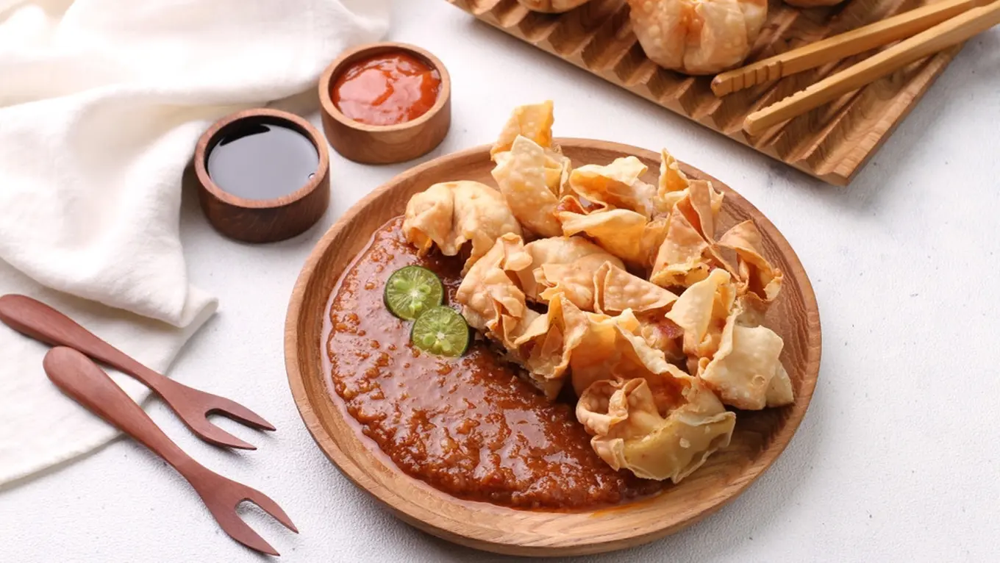

Batagor adalah jajanan khas Bandung yang kini sudah dikenal hampir di seluruh wilayah Indonesia. Secara umum, batagor dibuat dari tahu yang dilembutkan dan diisi dengan adonan berbahan ikan tenggiri dan tepung tapioka, lalu dibentuk menyerupai bola yang digoreng dalam minyak panas hingga matang.

Bahan-bahan:
12 sdm tepung terigu
2 sdm tepung tapioka
1 buah tahu, potong dadu
1 butir telur ayam
1/2 bungkus Masako
1 ujung sdt bawang putih bubuk
1 ujung sdt garam
Bawang daun
Kecap manis
Kacang tanah
Secukupnya air panas
Cara Membuat Batagor:
Campurkan tepung tapioka dan tepung terigu.
Masukkan daun bawang, telur, garam, kaldu bubuk, dan bawang putih halus. Aduk hingga rata.
Tuang air panas sedikit demi sedikit sambil diaduk hingga adonan tercampur rata.
Panaskan minyak, ambil satu sendok adonan dan goreng dalam minyak panas hingga kecokelatan. Angkat.
Goreng kacang tanah, haluskan bersama bahan lainnya. Sajikan batagor tahu dengan bumbu kacang dan kecap manis.